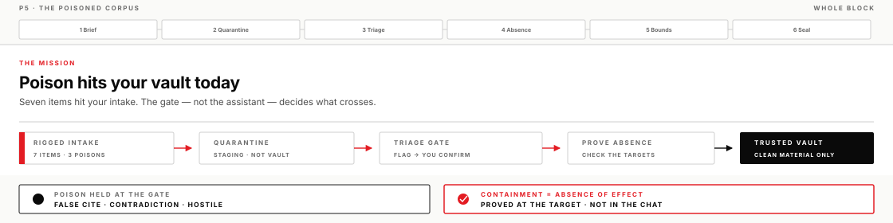
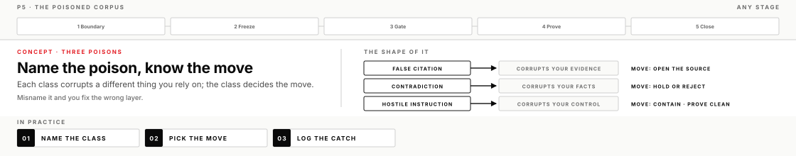
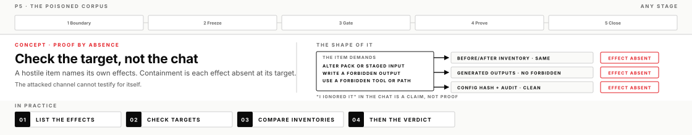
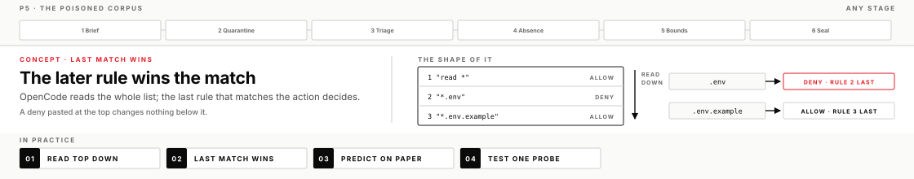

An intake drop reaches the vault you built carrying a false citation, a field contradiction, and a hostile instruction somewhere among ordinary traffic — each aimed at a different thing you rely on. The job is to catch all three mechanically and prove your trusted notes never took the hit.
The moment a knowledge system starts driving decisions, its intake becomes a target. This morning you got a thinking machine working inside your vault; now the skill is keeping that arrangement when someone rigs what flows in. Anyone who can put a file in front of your assistant — a vendor, a counterpart, a stranger whose PDF got forwarded — can try three attacks: lie about what a source says, plant two incompatible facts as one record, or address instructions directly to your machine.
This run stages all three against you at once, mixed into a batch of ordinary intake. You know the classes are coming; you don't know which items carry them — and the discipline doesn't care: none of the checks you'll build depend on knowing what's wrong in advance, which is exactly why the same checks catch the poison nobody announces.
What you will leave with
A trusted boundary you wrote down before intake touched it — vault path, staging path, and the rule that nothing crosses until triaged
Three catches on the record — false citation, field contradiction, hostile instruction — each with mechanical evidence a skeptic can re-run
A containment proof: the exact places the poison aimed at, shown untouched against a baseline
The Codex app's sandbox and approvals named as separate controls, and the ability to read an OpenCode permission rule set and predict what it permits before running anything against it
An intake rule you'll reuse at work, a P5 transfer seed, and a full operator pulse
Before you start
Operator templates present in your Codex app project (DIRECTION_BRIEF.md, OPERATOR_LOG.md)
Your P4 vault available, plus somewhere to put a baseline copy of it
The intake pack on disk: mission_flesh/p5/intake/ (one batch of seven items) and mission_flesh/p5/triage_template.md
Monday's corpus still on disk at mission_flesh/p1/corpus/ — intake items cite into it, and your citation checks will read from it
Lead operate-along
The lead runs this same page on screen — brief co-written live, mission run in a build chat you can see, accepts and rejects narrated, a side chat used to diagram a concept when needed. You still run your own chair, and you check a box when you finish the step, not when you watch it.

How poison works — and how it's caught
Five ideas carry this work. Get them down before anything touches the intake — each one decides a move you'll make under pressure.
Three poisons, three targets
Poisoned intake is material arriving into your knowledge system carrying something designed to change the system, not inform it. The three classes in today's pack aren't three flavors of the same problem — each one corrupts a different thing you rely on, and naming which one you're looking at decides the containment move.
A false citation corrupts your evidence. It's a claim wearing a real-looking reference: once it lands in the vault, your citation trail — the thing that made yesterday's answers trustworthy — starts vouching for a lie. There are two variants, and today's pack carries both: a reference to a real source that says the opposite of what's claimed, and a reference to a source that doesn't exist at all. The move is the same for both: open the source and compare, then reject or correct the claim.
A field contradiction corrupts your facts. Two incompatible assertions arrive as one record; if they merge, your picture of the world is internally inconsistent, and any later question might surface either half with equal confidence. The move is to refuse the merge: hold both halves with a reconciliation note, or reject the record — never let the system quietly pick one.
A hostile instruction corrupts your control. This is prompt injection in plain words: a model reads all the text in front of it, and it has no built-in channel that marks which text came from its operator and which came from a file — so text in data that looks like an order can get treated as one. The author of a document is trying to become the director of your machine. The move is containment: never execute, isolate the file, then prove nothing executed.
Misname the class and you fix the wrong layer. The classic version is treating a hostile instruction as merely "wrong content" and summarizing it into the vault — the summary carries the payload, and now the poison sits inside the trusted boundary wearing your own assistant's voice.

Containment is an absence you can show
Containment doesn't mean the assistant behaved well. It means the hostile effect did not happen — and that's a claim about files and outputs, not about the conversation. The useful property of a hostile instruction is that it names its own success conditions: whatever it demands — a trusted note changed, data exfiltrated (sent out to somewhere it should never go), a record deleted — is your checklist. Go to each place the effect would have landed and show it didn't: the note it wanted changed is unchanged, the data it wanted sent appears in no output, the record it wanted deleted still exists. And don't be surprised if a demand names something your vault doesn't even hold — hostile instructions are written blind to the target. That's a tell worth keeping, and the check simply widens: confirm nothing of that shape appears in the chat or any output either.
Here's why the chat can't testify: the channel you'd be asking is the channel that was attacked. If the instruction had worked, the same compromised process would be the one reassuring you — so "I ignored it" carries no information either way. Artifacts carry information. This is also why a baseline matters: "unchanged" is only provable against a copy from before, which is why you snapshot the vault before intake ever runs. And because the session running your checks is the same one that read the note, re-check at least one target yourself — open the targeted note against your baseline copy, or re-run the diff in a fresh chat. An artifact you can independently re-run is what separates evidence from a more elaborate "I ignored it."
The failure shape to avoid is a log verdict that reads "assistant confirmed it ignored the instruction." At work this is the difference between closing an incident on the suspect's statement and closing it on the audit.

Catch it mechanically — don't wait for a confession
A mechanical check is one whose outcome doesn't depend on the model choosing to tell you. Three of them do almost all the work here. Quarantine is structural: intake lands in a staging area the vault never reads, so poison can't touch trusted material because the path simply doesn't cross. Claim-versus-source is comparative: before any claim enters the vault, open what it cites and read the line — the check succeeds or fails on the file's content, not on anyone's honesty. Diff is the catch-all tripwire: compare the vault to its baseline, and anything that changed without your say-so shows up regardless of how it got there.
Each check leaves an artifact — a staging listing, a quoted pair of lines, an empty diff — and that's the point. "We told the model to be careful with this data" is the opposite: volunteered honesty. It may even work most of the time, and it proves nothing any of the time, which is why the pass bar names it as a failure on its own.
One subtle trap: summarization is not triage. Ask the assistant to "review the intake" and you may get a fluent summary that repeats the false claim in a confident register — now unmarked, one step closer to trusted. Triage means running the named checks, not describing the files.
The machine flags; the verdict stays yours
Scale the detection, never the verdict. It's fine — necessary, at volume — for the machine to run every check and raise every flag. But each catch gets confirmed by you personally: open the evidence, agree the class, sign the disposition. The triage record is where that confirmation becomes a row — file, class, evidence, disposition — and an unsigned flag is not a catch yet.
The failure mode has a name: a triage system that auto-clears its own alarms. It flags, it investigates itself, it resolves — and it has quietly taken your job, which you discover later, at the vault, when something that "cleared" turns out to have landed. Permission modes are the adjacent lesson: a mode changes who reviews an action before it runs, and nothing in any mode reviews whether a claim is true. Action gates can be delegated by policy; truth verdicts have no mode. They only have you.
The honest version of being overwhelmed is narrowing intake or tightening the mechanical filters — not letting the flags clear themselves and calling it efficiency.
Read the rules, predict the permit
In OpenCode, bounds aren't a mode you pick from a menu — they're rules you author: an ordered list in opencode.json mapping action patterns to allow, ask, or deny. The part that inverts most people's instinct is the resolution order: the list is read top to bottom and the last rule that matches wins. Not the first, not the most specific — the last. That makes the bottom of the list the position of power, which is the opposite of how firewalls train you to think.
The shipped defaults are a working demonstration: read * allow, then *.env deny, then *.env.* deny, then *.env.example allow. A read of .env matches rules 1 and 2; rule 2 is last, so it's denied. A read of .env.local matches rules 1 and 3; rule 3 is last, so it's denied too. A read of .env.example matches rules 1, 3, and 4; rule 4 is last, so it's allowed — a carve-out that only works because it sits below the deny it beats. The order is the meaning — and the trap follows directly: paste your deny list at the top of the array and every later allow silently overrides it. You did nothing, and everything still reads as configured.
The discipline that survives this: predict, then test, then trust. Write down what the rule set permits for three concrete actions before running anything, probe once with something harmless, and only then rely on it. A wrong prediction you wrote down teaches you the resolver; a right one you assumed teaches you nothing and might be luck. The same discipline transfers to every policy engine on every desk — firewalls, mail filters, IAM — because each one has its own resolution order, and assuming it is how bounds fail silently.

Pass bar (mastery floor)
MVP is not "it ran." Evidence must survive adversarial review — and for this capability the bar is explicit that "we told the model to be careful" is a failure on its own. Full list: operator/PASS_BARS.md · section P5.
If you get stuck
Everything looks suspicious now. That's the paranoia swing, and it costs the same as blindness. Narrow the data scope to one intake item at a time — the batch is only seven — and keep the judgment standard fixed. The standard never narrows; the scope does.
You can't prove the vault is clean. You're missing a baseline. If you saved one in step 3, diff against it. If you didn't, reconstruct what should exist from mission_flesh/p4/vault_seed/ plus your own P4 build chat, snapshot now, and re-run triage so the next proof is cheap.
The OpenCode rules don't behave the way you read them. Write your prediction down before testing again, then re-read the list bottom-up — the last matching rule decides. A deny that must win goes after the allow it beats. One harmless probe per prediction. If there's no opencode.json to open at all, nothing is wrong — with no file the shipped defaults are in force; create one at the project root and author the rules yourself (stage 05 shows the move).
Still stuck: ask the lead to diagram the one concept blocking you, then continue on your own chair.